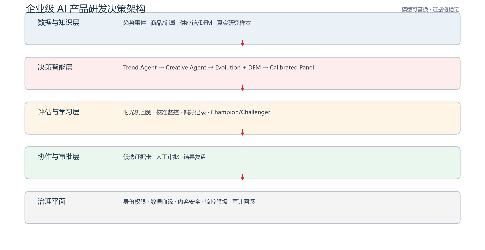

AI 先锋未来人才大赛 · 名创优品命题
不是生成更多创意，
不是生成更多创意，
而是证明哪两个值得下一步。
在月均约 1,600 个 SKU 的上新压力下，把趋势、制造约束、不确定性和人工责任收进同一份决策包。
W29 / DECISION BRIEF
待人工评审
04候选进入本轮
02非支配前沿
01建议进入盲测
合成 / 算法演示不代表名创优品真实经营指标
企业压力约 1,600公开年报 · SKU / 月
用户观察119公开样本进入分析
算法演示4 → 2候选 → 前沿
人工责任0自动执行动作
本周决策批次
待人工评审
W29 · 国潮轻户外机会组
- 候选概念
- 4 个
- 非支配前沿
- 2 个
- DFM 待办
- 2 项
- 证据版本
- demo-v2
国潮随行美妆收纳
需求潜力 0.92 · DFM 1.00 · 新颖性 0.50
前沿候选
环保防水毛绒挂件
需求潜力 0.92 · DFM 1.00 · 新颖性 0.50
前沿候选
系统边界
模型可替换，证据链保留

好的 AI 决策系统，不是把话说得更确定，而是让每个建议都知道：为什么、在什么边界内、由谁负责。
01 / LISTEN
公开样本观察
先把用户说的，变成产品机会
从公开可回溯样本中提取任务、角色、价格、质量与可获得性线索，为后续趋势验证和候选筛选提供问题上下文。
结论先行
A/B 级证据为主
“可爱且值”要同时完成五件事
角色吸引力×可负担×可使用×可获得×可信任
公开样本的共同信号是：IP 负责让人停下来，任务完成度、价格、质量、库存和售后决定是否购买、复购与推荐。
阅读完整研究报告
采集日期 2026-07-18 · 主题归纳，不展示个人身份
从观察到动作
下一步进入哪个决策字段
用户原话主题任务 / 角色 / 价格
结构化字段场景 · 品类 · 风险
交给算法验证趋势 · 候选 · DFM
样本主题密度
进入分析 119 条
点击一个主题，看它如何变成产品动作
评委可复核的转译
不替代企业数据
公开观察如何进入决策链
| 公开观察 | 产品问题 | 引擎动作 | 企业验收 |
|---|---|---|---|
| 高频使用与复购价值 | 能否一句话说清任务和效果？ | 建立任务词典，进入需求特征 | 复购、退货与真实销量盲测 |
| 角色级 IP 偏好 | 同一系列是否被平均对待？ | 按角色 × 品类 × 门店 × 时间切分 | 按 SKU 族和区域回放验证 |
| 促销与价格敏感 | 优惠带来转化还是规则摩擦？ | 把门槛、会员和履约列为风险 | 试点转化、投诉和售后成本 |
| 质量、真伪与售后 | 信任风险会否吞噬情绪价值？ | DFM / 合规 / 售后前置闸口 | 质量缺陷率、换货与内容审核 |
02 / DISCOVER
合成信号演示
先证明信号领先，再谈趋势
统一事件时间与入库时间，检验滞后方向和预测领先性，未通过的信号不进入创意阶段。
03 / GENERATE
比较权衡点，不迷信综合分
需求潜力、可制造性与新颖性同时保留，产品经理从非支配前沿选择，而不是让模型代替业务判断。
| 比较 | 概念 | 需求潜力 | 可制造性 | 新颖性 | 状态 | 操作 |
|---|
04 / VALIDATE
给出区间，而不是伪精确概率
虚拟面板只提供待校准的弱信号；真实观察负责锚定，独立留出数据负责区间覆盖。
分群弱信号
非购买概率
不同人群的区间分布
校准健康度
查看实现
独立留出集诊断
加权 ECE0.016越接近 0 越好
区间覆盖率91.9%目标覆盖 90%
锚定样本180合成演示
保形留出60未参与锚定拟合
05 / DECIDE
HITL 闸口
AI 提供证据包，人对动作负责
演示决策不会触发采购、打样、定价或上架；每次选择都记录理由、证据版本和责任边界。
审计血缘
最近决策记录
06 / PROVE
下载机器证据
让评委看见证据等级与验证边界
实现、合成演示与企业待验证严格分层；失败窗口、受保护字段和协议参数均保留。
已实现
代码存在、可运行、有自动化测试。
回测切片 · 校准 · DFM · 非支配前沿合成演示
固定生成器验证端到端逻辑和防泄漏。
JSON · CSV · PNG · 逐窗口审计企业待验证
必须使用真实历史数据或受控试点回答。
命中率提升 · 周期缩短 · 成本 · ROI
Precision@20
随机排序0.250
历史品类率0.317
表格模型0.490
仅证明合成生成器中的可学习关系被识别
- 训练窗
- 180 天
- 隔离窗
- 14 天
- 预测窗
- 90 天
- 滚动步长
- 30 天
- 受保护列
- 3 个
- 固定种子
- 2026
企业联合验证
从历史证据到受控试点
01历史盲测冻结标签、基线与盲测期，不连接生产系统
02影子运行定期生成候选和证据包，仅供产品经理对照
03受控试点限定品类与区域，审批后执行并支持回滚